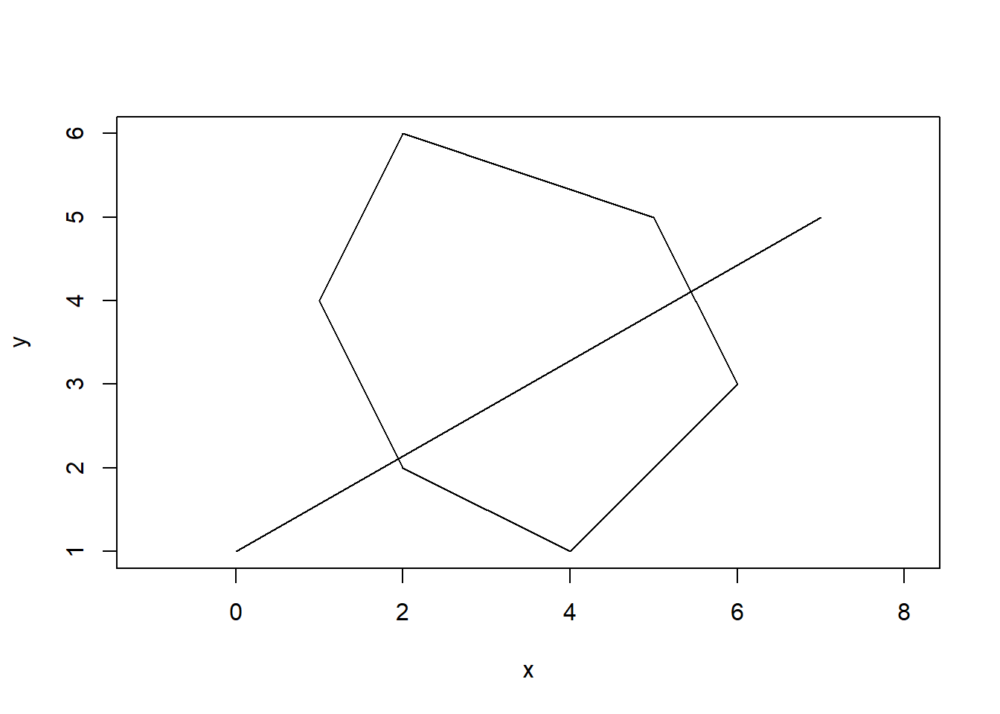
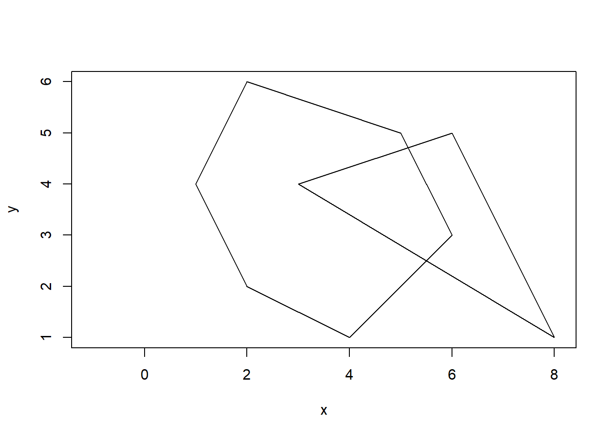
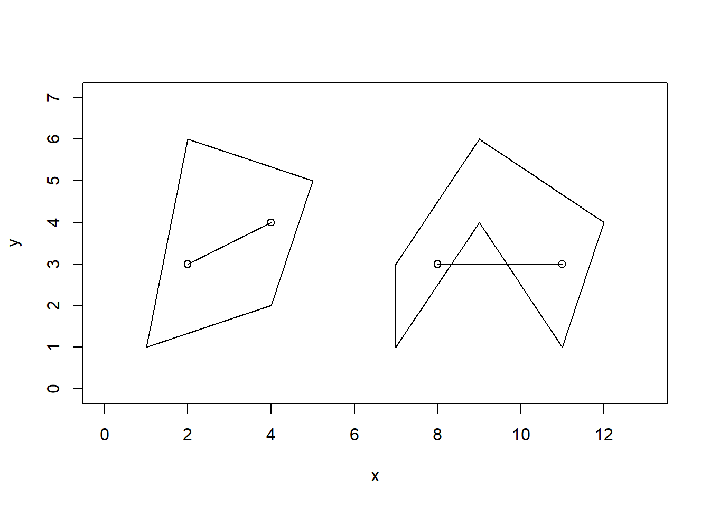
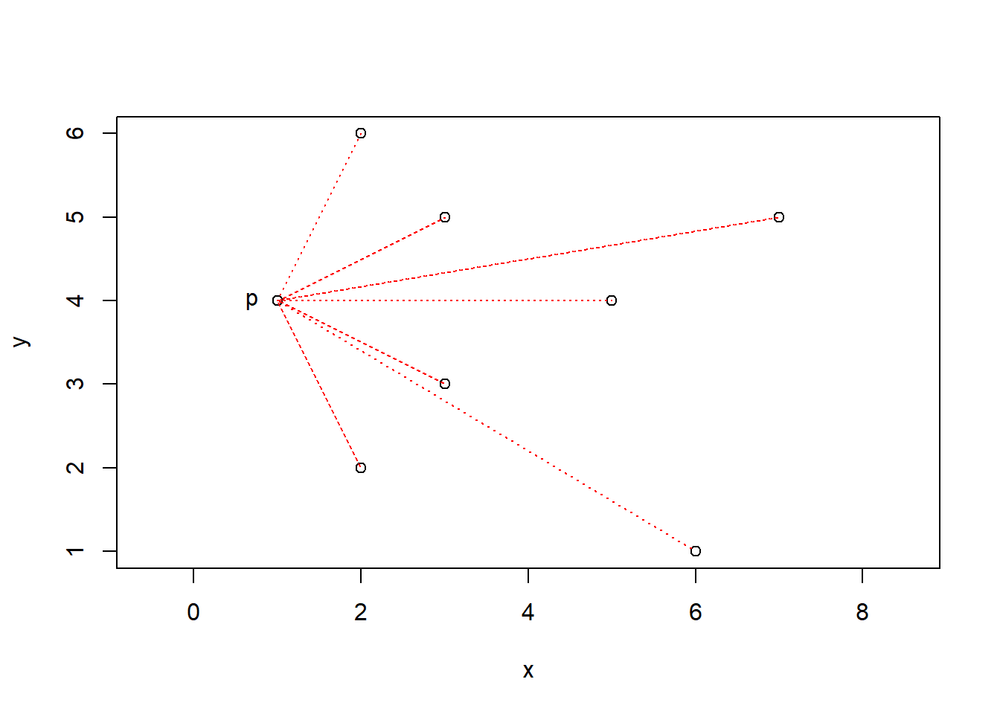
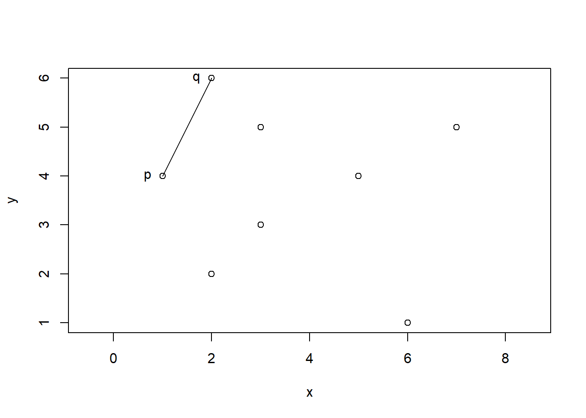
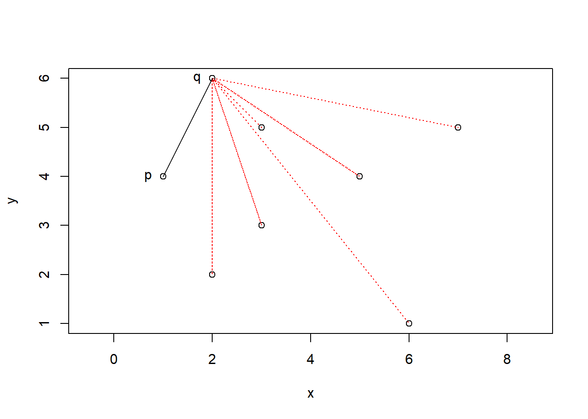
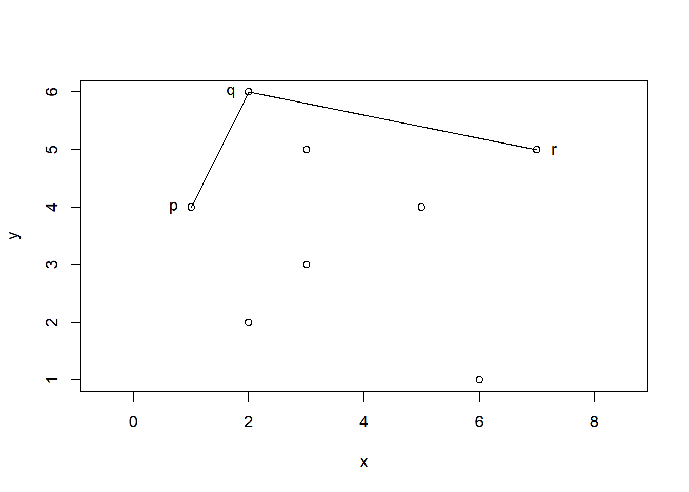
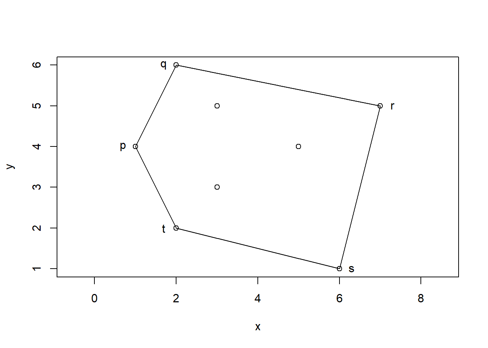

Generating convex polygons
Convex polygon definition
For a polygon to be defined as convex all of its’ interior angles must be strictly less than 180 degrees. Another way to look at this is that every vertex of the polygon points outwards and the straight line segment on the inside of the polygon between any two vertices never crosses the boundary of the shape.
Properties of convex polygons
There are several properties that convex polygons have which make them useful in many areas of mathematics. These properties can also be used to easily check whether a polygon is convex. For example if you draw a straight line through a convex polygon it will intersect the edges exactly twice as can be seen in the diagram below:

The area of a convex polygons relatively easy to calculate as the n sided polygon can be split into n-2 triangles by connecting one vertex to the other non adjacent vertices. Then the area of each triangle can then be easily calculated and then added together to get the area of the polygon. See how this works in the example below:

The intersection of two convex polygons is a convex polygon. See the example below where a convex hexagon intersects with a convex triangle and the intersection forms a convex quadrilateral:

Another property of convex polygons is that any line segment joining two points within the polygon will lie completely within the polygon. This is not always true for concave polygons as shown in the diagram below:

Jarvis’s Algorithm
There are a few ways of generating convex polygons to enclose a given set of points. One example is Jarvis’s algorithm also known as the gift wrapping algorithm. This algorithm was first published by R.A. Jarvis in 1973 and it finds the convex hull of a set of given coordinates. To simplify the algorithm we are going to assume that no two points are the same and that no two points would cause lines to be projected such that they would overlap with the same gradient. The algorithm works as follows:
Firstly set the initial starting point, p, as the left most point in the set coordinates. This is the point with the lowest x-value. If two points have the same lowest x-value choosing either will work.
From this point extend lines to each of the other coordinates in turn. Looking at these lines choose the one furthest left from the perspective of the point p, looking towards the other points. Call the point this line extends to q. Keeping the line pq, remove all other lines.
Repeat the above step using the new point q as the starting point. Each time to choose the left most line look from the perspective of the current starting point looking towards the other points.
Continue repeating this process until reaching point p again.
The lines remaining will have formed a convex polygon. All of the points in our set of coordinates will be either vertices of the convex polygon or contained within it.
Example
An example of this algorithm can be seen below using the points (1,4), (2,6), (3,5), (3,3), (2,2), (5,4), (7,5) and (6,1). For the first step we plot the points and label the left most point which in this case is (1,4) as p. We then extend lines to each of the points so we can consider which is the left most point.

In this case we can see that the lone extending to (2,6) is the furthest left so we will call this point q. Therefore we keep the line pq and remove the others before continuing to repeat the process.

We next extend lines to the remaining points from q as shown below:

We can see that the left most line now extends to (7,5) so we label this point r. We keep the line qr along with pq and continue the process.

Repeating the process three more times we get the convex pentagon pqrst seen below:

All of our points are either vertices of pqrst or contained within the convex polygon. This is an effiecient way of creating a polygon from any set of coordinates.
Other methods
There are several other ways of generating convex polygons however most of these rely on trial end error.
One example of these methods is rejection sampling where we generate random coordinates and see if they form a convex polygon. If they do we return the polygon and if not we try again with a different set of random coordinates. This method works for polygons with a small amount of sides however it is very inefficient especially for polygons with a larger number of vertices.
One quicker way of generating convex polygons is to create two lists of x and y coordinates and order them, isolating the extreme points. Then the other coordinates can be organised into two chains and used to create vectors. The x and y components of the vectors can be randomly paired up and used to create vectors. We can then order these vectors by their angle and then in turn put them together end to end to form a convex polygon.
References
https://en.wikipedia.org/wiki/Gift_wrapping_algorithm
https://www.geeksforgeeks.org/convex-hull-set-1-jarviss-algorithm-or-wrapping/
https://cglab.ca/~sander/misc/ConvexGeneration/convex.html
https://www.mathopenref.com/polygonconvex.html
https://en.wikipedia.org/wiki/Convex_polygon
https://en.wikipedia.org/wiki/Convex_hull
http://www.assignmentpoint.com/science/mathematic/convex-polygon-definition-properties.html